Cátedra 20: Síntesis del Curso
Cierre integrador: los tres ensembles, los cuatro potenciales, las cuatro relaciones de Maxwell, y el puente completo entre mecánica estadística y termodinámica clásica. Una vista de pájaro de todo el edificio conceptual.
Temas que cubre
- Los tres ensembles: microcanónico $(E,V,N)$, canónico $(T,V,N)$, gran canónico $(T,V,\mu)$
- Los cuatro potenciales: $U$, $F$, $H$, $G$ y sus variables naturales
- Las cuatro relaciones de Maxwell y cómo derivarlas sistemáticamente
- Entropía de Gibbs $S = -k_B\sum_r P_r\ln P_r$: unificación de la entropía estadística
- Identidad de Euler e identificación de $G = N\mu$
- Aplicaciones de síntesis: gas de fotones (radiación de cuerpo negro), gas de Fermi degenerado
Conceptos clave
Equivalencia de ensembles
Los tres ensembles dan los mismos resultados termodinámicos en el límite $N\to\infty$. La elección del ensemble es de conveniencia matemática, no física. Para sistemas finitos (nanoestructuras, biología), los ensembles difieren y hay que elegir con cuidado.
Entropía de Gibbs
$S = -k_B\sum_r P_r\ln P_r$ es la definición general de entropía estadística. Se reduce a $S = k_B\ln\Omega$ (Boltzmann) en el microcanónico (todos los estados igualmente probables). Es idéntica a la entropía de Shannon de la teoría de información.
Identidad de Euler
La extensividad de $U$ implica $U = TS - pV + \mu N$ (Euler). De aquí: $G = \mu N$, $F = -pV + \mu N$. La ecuación de Gibbs-Duhem $SdT - Vdp + Nd\mu = 0$ es la diferencial de la identidad de Euler.
Radiación de cuerpo negro
Gas de fotones con $\mu = 0$ (el número de fotones no se conserva) y estadística de Bose-Einstein: $\bar{n}(\omega) = 1/(e^{\hbar\omega/k_BT}-1)$. La energía espectral es la distribución de Planck; integrada da $u = aT^4$ (ley de Stefan-Boltzmann).
Fórmulas fundamentales




Qué hay que entender
- Todo parte de un postulado: en el equilibrio, el sistema maximiza la entropía $S = -k_B\sum P_r\ln P_r$ sujeto a las restricciones del ensemble. De ahí salen las distribuciones y toda la termodinámica.
- El ensemble correcto depende de las variables fijas: microcanónico para sistemas aislados (difícil matemáticamente), canónico para $T$, $V$, $N$ fijos (el más usado), gran canónico para $T$, $V$, $\mu$ fijos (ideal para cuántica).
- Las relaciones de Maxwell no son solo fórmulas útiles — son la manifestación de que los potenciales termodinámicos son funciones de estado (sus diferenciales son exactos). Esto es consecuencia de la existencia del equilibrio.
- La conexión estadística ↔ termodinámica se resume en: conocida la función de partición ($Z$, $\Xi$, o $\Omega$ microcanónica), toda la termodinámica se obtiene derivando. La física microscópica entra solo a través del espectro de energías $\{E_r\}$.